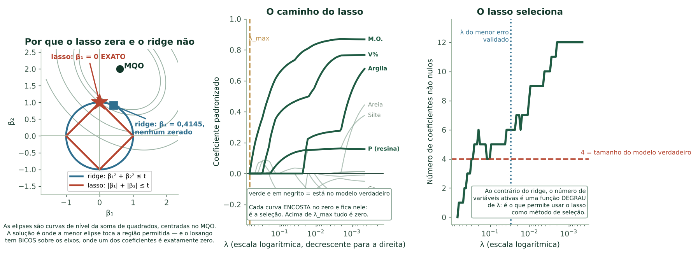
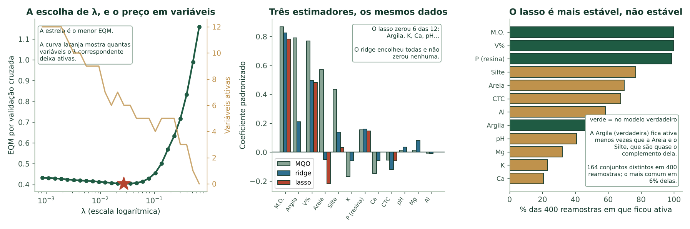

Regressão lasso
Penaliza a soma dos valores absolutos dos coeficientes, levando alguns a exatamente zero — encolhimento e seleção em um único ajuste, inclusive quando p > n.
Comece por aqui
O lasso troca a penalidade quadrática do ridge pela soma dos valores absolutos dos coeficientes. A mudança parece pequena e tem uma consequência grande: coeficientes passam a ser levados a exatamente zero. O lasso encolhe e seleciona ao mesmo tempo, em um único ajuste, e funciona quando \(p>n\) — onde a busca exaustiva e o stepwise não funcionam.
No conjunto de solo, o lasso com \(\lambda\) de menor erro validado alcança 0,4040 — praticamente igual ao do modelo ajustado diretamente nas quatro variáveis verdadeiras (0,4052). Sem saber quais são essas quatro. Em compensação, ele não as encontra: escolhe seis, trocando a argila por silte e areia, que juntas são o complemento dela.
O que é o lasso
A penalidade \(L_1\) tem derivada constante igual a \(\lambda\) na origem, enquanto a quadrática do ridge tem derivada nula ali. É dessa diferença que vem tudo: com derivada constante, há um intervalo em torno de zero dentro do qual a penalidade vence o ganho de ajuste, e o coeficiente ótimo é exatamente zero.

| Aspecto | Ridge (L2) | Lasso (L1) |
|---|---|---|
| Penalidade | Σβ² | Σ|β| |
| Derivada na origem | 0 | λ |
| Zeros exatos | nunca | sim |
| Seleciona variáveis | não | sim |
| Solução | forma fechada | iterativa (descida por coordenadas) |
| Grupos colineares | encolhe o grupo junto | escolhe um representante |
| Com p > n | usa todas as p | ativa no máximo n |
| Priori bayesiana equivalente | normal | Laplace (dupla exponencial) |
Pressupostos e como verificá-los
| Pressuposto | Por que importa | Como verificar |
|---|---|---|
| Variáveis padronizadas | A penalidade depende da escala. | O glmnet faz por padrão. |
| Intercepto não penalizado | Caso contrário o ajuste depende da origem de y. | Todas as implementações sérias o excluem. |
| Esparsidade plausível | O lasso supõe que poucas variáveis importam. | Se o sinal é difuso, prefira ridge. |
| Colinearidade entre candidatas reconhecida | Determina qual representante é escolhido. | VIF e correlações, inclusive de somas. |
| λ escolhido por validação cruzada | Não há valor universal. | cv.glmnet, com semente fixada. |
| Erro avaliado com λ reescolhido por dobra | Fixar λ na amostra inteira é otimista. | Validação aninhada. |
| Valores-p não reportados | A seleção usou os dados. | Veja a ficha stepwise. |
| Observações independentes | A validação cruzada pressupõe isso. | Com agrupamento, valide por grupo. |
| Resposta na escala adequada | O glmnet cobre famílias; escolha a certa. | family = para logística, Poisson, Cox. |
O lasso é construído sobre a hipótese de que a maioria dos coeficientes verdadeiros é zero. Quando isso vale, ele é excelente. Quando o sinal está espalhado por muitas variáveis de efeito pequeno — o caso típico de genômica poligênica, ou de um espectro em que toda uma região contribui — o lasso é forçado a escolher poucas e descarta sinal real. Nesse regime o ridge costuma predizer melhor, e a rede elástica fica no meio. Não há como decidir a priori: compare os dois por validação cruzada.
Formulação e cálculo
Em que:
- \(X\)
- matriz das candidatas, padronizadas
- \(\lambda\)
- parâmetro de penalidade
- \(\sum|\beta_j|\)
- norma \(L_1\) dos coeficientes, sem o intercepto
- \(n\)
- número de observações
O limiar brando, e o λ a partir do qual tudo é zero
Em que:
- \(\rho_j\)
- o estimador de mínimos quadrados parcial: ajuste de \(x_j\) aos resíduos das outras
- \(S(z,\lambda)\)
- operador de limiar brando
- \(\lambda_{\max}\)
- menor \(\lambda\) que zera todos os coeficientes
A descida por coordenadas percorre as variáveis uma a uma aplicando essa atualização, e converge porque o problema é convexo. Nestes dados \(\lambda_{\max}=0{,}67520\): acima disso o lasso devolve apenas o intercepto, e é a partir desse valor que o glmnet constrói a grade.
Exemplo numérico, passo a passo
| Variável | MQO parcial ρ | Limiar λ | Coeficiente lasso |
|---|---|---|---|
| pH | 0,02893 | 0,05000 | 0 (|ρ| < λ) |
| M.O. | 0,76056 | 0,05000 | 0,71855 |
| P (resina) | 0,17354 | 0,05000 | 0,12493 |
| K | 0,00924 | 0,05000 | 0 |
| Ca | 0,01166 | 0,05000 | 0 |
| Mg | 0,02856 | 0,05000 | 0 |
| Al | −0,01880 | 0,05000 | 0 |
| CTC | −0,02751 | 0,05000 | 0 |
| V% | 0,49628 | 0,05000 | 0,45130 |
| Argila | 0,03899 | 0,05000 | 0 |
| Silte | 0,07879 | 0,05000 | 0,02911 |
| Areia | −0,21117 | 0,05000 | −0,16298 |
Para a matéria orgânica, \(\rho=0{,}76056\) e \(\lambda=0{,}05\). Como \(|\rho|>\lambda\), o coeficiente é \[\begin{aligned}&\operatorname{sinal}(0{,}76056)\times(0{,}76056 \\ &\quad -0{,}05) \\ &= 0{,}71056,\end{aligned}\] dividido pela média dos quadrados da coluna padronizada, que é \(89/90=0{,}98889\) — resultando em \(0{,}71855\). Confere com a tabela.
Para a argila, \(\rho=0{,}03899\) e \(|\rho|<\lambda=0{,}05\), de modo que \(\max(|\rho|-\lambda,0)=0\) e o coeficiente é exatamente zero. Note que \(\rho\) não é pequeno porque a argila seja irrelevante — ela está no modelo verdadeiro — mas porque a areia, já no modelo com coeficiente \(-0{,}163\), absorveu a informação que a argila carregaria.
A diferença entre encolher e zerar está nessa comparação: no ridge, qualquer \(\rho\neq0\) produz coeficiente não nulo, porque a penalidade quadrática só divide. No lasso, a penalidade subtrai, e a subtração pode zerar.
| Ordem | Variável | λ de entrada | No modelo verdadeiro? |
|---|---|---|---|
| 1 | M.O. | 0,61326 | SIM |
| 2 | K | 0,45951 | não |
| 3 | Mg | 0,37907 | não |
| 4 | V% | 0,28403 | SIM |
| 5 | Ca | 0,25798 | não |
| 6 | Areia | 0,19330 | não |
| 7 | P (resina) | 0,17557 | SIM |
| 8 | Silte | 0,09857 | não |
| 9 | CTC | 0,03766 | não |
| 10 | Argila | 0,02114 | SIM |
| 11 | Al | 0,00889 | não |
| 12 | pH | 0,00412 | não |
Propriedades
- Produz zeros exatos: é ao mesmo tempo encolhimento e seleção.
- O problema é convexo, de modo que o mínimo é global.
- \(\lambda\ge\lambda_{\max}=\max_j|x_j^{\top}y|/n\) zera todos os coeficientes.
- Com \(p>n\), ativa no máximo \(n\) variáveis — é uma limitação estrutural.
- Dentro de um grupo colinear, tende a escolher um representante e zerar os demais.
- Os coeficientes são enviesados para zero, inclusive os corretamente selecionados.
- Equivale à moda a posteriori com priori de Laplace sobre os coeficientes.
- Não tem forma fechada: resolve-se por descida por coordenadas (Friedman et al., 2010).
Como interpretar os resultados
| Elemento | O que informa | Cuidado |
|---|---|---|
| Gráfico do caminho | Quando cada variável entra e sai. | A ordem de entrada não é ordem de importância. |
print(la) — Df | Número de coeficientes não nulos. | É o grau de esparsidade, não os g.l. do teste. |
print(la) — %Dev | Proporção de desvio explicada. | Resubstituição: otimista. |
lambda.min | λ de menor erro validado. | Varia entre execuções; fixe a semente. |
lambda.1se | λ maior, mais esparso. | Costuma ser a escolha reportada. |
| Coeficientes com "." | Os zerados. | Zero não significa "sem efeito". |
| Conjunto ativo | As variáveis selecionadas. | Instável: reporte frequências de bootstrap. |
| Erro validado | O que o modelo prediz. | Reescolha λ dentro de cada dobra. |
Dois cuidados de interpretação
Nestes dados a argila está no processo gerador e o lasso a zera; a areia não está e recebe coeficiente \(-0{,}163\). O lasso não errou: areia e argila carregam quase a mesma informação, e escolher uma é indiferente para predizer. O que não se pode fazer é ler o conjunto ativo como a lista de variáveis que importam. Quando as candidatas são correlacionadas, o conjunto ativo é uma parametrização adequada, entre várias.
No caminho desta ficha, a segunda variável a entrar é o potássio e a terceira é o magnésio — nenhuma das duas está no modelo verdadeiro — enquanto o fósforo, que está, entra em sétimo e a argila em décimo. A entrada precoce reflete a correlação marginal com \(y\) no momento em que o resíduo é grande, e nada mais.
Como executar no R e em Python
Onde executar o código em Python
Não é preciso instalar nada: o Google Colab é um computador na nuvem, gratuito, que executa Python pelo navegador e já traz as bibliotecas usadas aqui (numpy, scipy e matplotlib).
O glmnet com alpha = 1 é o lasso (o padrão da função). Ele exige uma matriz, padroniza por padrão e devolve os coeficientes na escala original, com os zeros impressos como ponto. glmnet(X, y) ajusta o caminho completo de \(\lambda\) com partida quente; cv.glmnet escolhe \(\lambda\) e devolve lambda.min e lambda.1se. O argumento alpha entre 0 e 1 dá a rede elástica, e relax = TRUE ajusta também a versão relaxada. Para outras respostas, family = "binomial", "poisson" ou "cox". Para penalizar variáveis de forma desigual, penalty.factor; para forçar uma variável a entrar, basta dar-lhe fator zero. Fixe sempre a semente antes do cv.glmnet.
library(glmnet)
Xm <- as.matrix(solo[, cand]); y <- solo$y
set.seed(1)
cvl <- cv.glmnet(Xm, y, alpha = 1, nfolds = 10)
coef(cvl, s = "lambda.min") # os zeros aparecem como "."
coef(cvl, s = "lambda.1se")
Exemplo de aplicação
Contexto dos dados
Os dados são fictícios e foram criados pelo autor: 90 amostras de solo de uma área experimental, com a produtividade da cultura (t/ha) e doze variáveis candidatas de análise de rotina — pH, matéria orgânica, fósforo resina, potássio, cálcio, magnésio, alumínio, CTC, saturação por bases (V%), argila, silte e areia. O processo gerador é conhecido e usa apenas quatro delas: matéria orgânica, fósforo, V% e argila, com erro de desvio-padrão 0,60 t/ha. A colinearidade é deliberada e realista: argila, silte e areia somam aproximadamente 100% por construção física, e cálcio, magnésio e potássio estão ligados à CTC e ao V%. Saber qual é o modelo verdadeiro permite verificar se cada método o encontra — o que, em dados reais, nunca é possível. O mesmo conjunto atravessa as seis fichas do grupo.
O segundo conjunto, também fictício, é um espectro de reflectância no infravermelho próximo: 60 amostras, 200 comprimentos de onda entre 1.100 e 2.300 nm, e o teor de proteína (%) como resposta. Quatro bandas de absorção foram construídas, mas apenas duas determinam a proteína; a maior fonte de variação do espectro é uma deriva de linha de base sem relação com ela. Aqui p > n, e os métodos clássicos de seleção deixam de ser aplicáveis.
Código em R
# Regressão lasso: exemplo completo ----
# Pacotes: glmnet
# Dados fictícios: 90 amostras de solo, 12 candidatas.
# O arquivo solo.csv acompanha o site, na pasta scripts/.
solo <- read.csv("solo.csv")
str(solo) # y (t/ha) e as 12 candidatas
dim(solo)
# O modelo VERDADEIRO (conhecido por construção) usa só quatro:
# y = 4,00 + 0,80*mo + 0,0250*pres + 0,0300*v + 0,0200*argila + erro
cand <- c("ph","mo","pres","k","ca","mg","al","ctc","v","argila","silte","areia")
verdadeiras <- c("mo","pres","v","argila")
# A colinearidade, que é o problema central do grupo
library(car)
vif(lm(y ~ ., data = solo))
round(cor(solo[, cand]), 2)
library(glmnet)
Xm <- as.matrix(solo[, cand]); y <- solo$y
# ---- 1. O lambda acima do qual TUDO é zero tem forma fechada
Xp <- scale(Xm); n <- nrow(solo)
max(abs(t(Xp) %*% (y - mean(y))))/n # lambda_max
# O glmnet constrói a grade a partir desse valor, para baixo.
# ---- 2. O caminho do lasso (alpha = 1 é o padrão)
la <- glmnet(Xm, y, alpha = 1)
plot(la, xvar = "lambda", label = TRUE)
print(la) # Df, %Dev e Lambda por passo
# A ORDEM DE ENTRADA das variáveis
for (j in seq_along(cand)) {
b <- as.vector(coef(la)[j + 1, ])
k <- which(abs(b) > 1e-8)[1]
cat(sprintf("%-8s entra em lambda = %.5f\n", cand[j],
if (is.na(k)) NA else la$lambda[k]))
}
# ---- 3. A escolha de lambda por validação cruzada
set.seed(1)
cvl <- cv.glmnet(Xm, y, alpha = 1, nfolds = 10)
plot(cvl)
cvl$lambda.min; cvl$lambda.1se
coef(cvl, s = "lambda.min") # os coeficientes; os zeros aparecem como "."
coef(cvl, s = "lambda.1se")
sum(coef(cvl, s = "lambda.min")[-1] != 0) # quantas ficaram ativas
verdadeiras # para comparar
# ---- 4. O PROBLEMA DOS GRUPOS CORRELACIONADOS
cor(solo$argila, solo$areia)
cor(solo$argila, solo$silte + solo$areia) # -0,99: substituto quase perfeito
# A argila ESTÁ no modelo verdadeiro e o lasso escolhe silte e areia.
# Instabilidade do conjunto ativo
set.seed(41)
cont <- numeric(12); names(cont) <- cand; nat <- numeric(1000)
for (b in 1:1000) {
i <- sample(nrow(solo), replace = TRUE)
m <- glmnet(Xm[i, ], y[i], alpha = 1, lambda = cvl$lambda.min)
vs <- cand[as.vector(coef(m))[-1] != 0]
cont[vs] <- cont[vs] + 1; nat[b] <- length(vs)
}
sort(round(100*cont/1000, 1), decreasing = TRUE)
mean(nat); range(nat)
# ---- 5. REDE ELÁSTICA: a correção para grupos correlacionados
set.seed(2)
for (al in c(1, 0.7, 0.4, 0.1)) {
cj <- cv.glmnet(Xm, y, alpha = al, nfolds = 10)
vs <- cand[as.vector(coef(cj, s = "lambda.min"))[-1] != 0]
cat(sprintf("alpha = %.1f: EQM %.4f, %d ativas: %s\n", al,
min(cj$cvm), length(vs), paste(vs, collapse = ", ")))
}
# Quando alpha diminui, os grupos colineares entram JUNTOS.
# ---- 6. Com p > n, o lasso ativa no máximo n variáveis
# Dados fictícios: espectro NIR, 60 amostras, 200 comprimentos de onda.
# O arquivo espectro.csv acompanha o site, na pasta scripts/.
esp <- read.csv("espectro.csv")
dim(esp) # 60 x 201: proteina + nm1100 ... nm2300
Xe <- as.matrix(esp[, -1]); ye <- esp$proteina
qr(scale(Xe))$rank # 59: o posto é menor que o número de colunas
set.seed(7)
cve <- cv.glmnet(Xe, ye, alpha = 1, nfolds = 10)
cve$lambda.min
sum(coef(cve, s = "lambda.min")[-1] != 0) # muito menos que 200
min(cve$cvm); 1 - min(cve$cvm)/var(ye)
max(cve$nzero) # nunca passa de n = 60
# ---- 7. O LASSO RELAXADO: reajustar por MQO nas selecionadas
vs <- cand[as.vector(coef(cvl, s = "lambda.min"))[-1] != 0]
cbind(lasso = as.vector(coef(cvl, s = "lambda.min"))[-1][
as.vector(coef(cvl, s = "lambda.min"))[-1] != 0],
relaxado = coef(lm(reformulate(vs, "y"), data = solo))[-1])
# O glmnet faz isso diretamente com relax = TRUE:
cvr <- cv.glmnet(Xm, y, alpha = 1, relax = TRUE)
print(cvr)
# ---- 8. NÃO reporte valores-p do modelo do lasso
# A seleção usou os dados; os p do lm reajustado são inválidos pelas
# mesmas razões da ficha stepwise. Para inferência pós-seleção, veja
# selectiveInference::fixedLassoInf.
A mesma análise em Python, com os resultados
Cole o código em um notebook do Google Colab ↗ e execute com Shift+Enter. Os valores abaixo são a saída desse código.
import numpy as np
# ------------------------------------------------------------------
# Bloco comum às fichas deste grupo: funções auxiliares e dados (cab14)
# ------------------------------------------------------------------
import numpy as np, itertools
# ------------------------------------------------------------------
# Bloco comum às fichas deste grupo: funções auxiliares e dados (dados14)
# ------------------------------------------------------------------
import numpy as np
import pandas as pd
def le_csv(nome):
"""Lê o arquivo de dados da ficha: primeiro na pasta atual; se não
estiver lá (por exemplo, no Google Colab), direto do site."""
try:
return pd.read_csv(nome)
except FileNotFoundError:
return pd.read_csv('https://cassiushenrique.github.io/ModelosEstatisticos/scripts/' + nome)
# Dados fictícios: 90 amostras de solo (arquivo solo.csv, pasta scripts/ do site)
solo = le_csv('solo.csv')
NOMES=['ph', 'mo', 'pres', 'k', 'ca', 'mg', 'al', 'ctc', 'v', 'argila', 'silte', 'areia']
ROT={'ph':'pH','mo':'M.O.','pres':'P (resina)','k':'K','ca':'Ca','mg':'Mg','al':'Al','ctc':'CTC','v':'V%','argila':'Argila','silte':'Silte','areia':'Areia'}
X=solo[NOMES].to_numpy(float); Y=solo['y'].to_numpy(float)
VERD={"mo":0.80,"pres":0.0250,"v":0.0300,"argila":0.0200}
N,P=X.shape
# ------------------------------------------------------------------ fim do bloco comum
def pad(A, mu=None, sd=None):
"""Padroniza colunas (média 0, desvio 1, com n-1)."""
if mu is None: mu = A.mean(0)
if sd is None: sd = A.std(0, ddof=1)
sd = np.where(sd < 1e-12, 1.0, sd)
return (A - mu)/sd, mu, sd
def ols(A, y):
Ad = np.column_stack([np.ones(len(A)), A])
return np.linalg.lstsq(Ad, y, rcond=None)[0]
def prev(A, b):
return b[0] + A @ b[1:]
def sqr(obs, p_): return float(np.sum((obs - p_)**2))
def eqm(obs, p_): return float(np.mean((obs - p_)**2))
def ridge(A, y, lam):
"""Ridge em A JÁ padronizado; não penaliza o intercepto."""
n_, p_ = A.shape
G = A.T @ A + lam*n_*np.eye(p_)
b = np.linalg.solve(G, A.T @ (y - y.mean()))
return np.concatenate([[y.mean()], b])
def lasso(A, y, lam, it=20000, tol=1e-11):
"""Descida por coordenadas em A JÁ padronizado (Friedman et al., 2010)."""
n_, p_ = A.shape
b = np.zeros(p_); r = y - y.mean()
nrm = (A**2).sum(0)/n_
for _ in range(it):
mx = 0.0
for j in range(p_):
bj = b[j]
rho = A[:, j] @ (r + A[:, j]*bj)/n_
nb = np.sign(rho)*max(abs(rho) - lam, 0.0)/nrm[j]
if nb != bj:
r = r - A[:, j]*(nb - bj); b[j] = nb
mx = max(mx, abs(nb - bj))
if mx < tol: break
return np.concatenate([[y.mean()], b])
def pcr(A, y, m):
"""Regressão nos m primeiros componentes principais de A padronizado."""
u, s, vt = np.linalg.svd(A, full_matrices=False)
T = (u*s)[:, :m]
g = np.linalg.lstsq(T, y - y.mean(), rcond=None)[0]
b = vt[:m].T @ g
return np.concatenate([[y.mean()], b])
def pls(A, y, m):
"""NIPALS para uma resposta; devolve coeficientes na escala de A."""
Xr = A.copy(); yr = y - y.mean()
W = np.zeros((A.shape[1], m)); Pm = np.zeros((A.shape[1], m)); q = np.zeros(m)
for a in range(m):
w = Xr.T @ yr; w = w/np.linalg.norm(w)
t = Xr @ w; tt = t @ t
pj = Xr.T @ t/tt; qa = (yr @ t)/tt
Xr = Xr - np.outer(t, pj); yr = yr - qa*t
W[:, a] = w; Pm[:, a] = pj; q[a] = qa
Rm = W @ np.linalg.inv(Pm.T @ W)
b = Rm @ q
return np.concatenate([[y.mean()], b])
def dobras(n_, k, seed):
rg = np.random.default_rng(seed)
d = np.tile(np.arange(k), int(np.ceil(n_/k)))[:n_]
rg.shuffle(d); return d
def cv(ajusta, A, y, k=10, seed=0, reps=1):
"""EQM por validação cruzada; TODA a padronização dentro do laço."""
tot = []
for r in range(reps):
d = dobras(len(y), k, seed + 1000*r); e = np.empty(len(y))
for j in range(k):
tr, te = d != j, d == j
Ap, mu, sd = pad(A[tr])
b = ajusta(Ap, y[tr])
e[te] = y[te] - prev((A[te] - mu)/sd, b)
tot.append(float(np.mean(e**2)))
return float(np.mean(tot)), float(np.std(tot, ddof=1)) if reps > 1 else 0.0
def crit(A, y, cols, s2):
"""Cp de Mallows, AIC e BIC de um submodelo."""
Ad = np.column_stack([np.ones(len(A))] + [A[:, j] for j in cols])
b = np.linalg.lstsq(Ad, y, rcond=None)[0]
sq = sqr(y, Ad @ b); n_, d = len(y), len(cols) + 1
return dict(sqr=sq, p=d, r2=1 - sq/np.sum((y - y.mean())**2),
r2a=1 - (sq/(n_ - d))/(np.sum((y - y.mean())**2)/(n_ - 1)),
cp=sq/s2 - n_ + 2*d,
aic=n_*np.log(sq/n_) + 2*d, bic=n_*np.log(sq/n_) + np.log(n_)*d)
def vif(A):
Ap, _, _ = pad(A); out = []
for j in range(A.shape[1]):
o = [i for i in range(A.shape[1]) if i != j]
b = ols(Ap[:, o], Ap[:, j]); r = Ap[:, j] - prev(Ap[:, o], b)
out.append(1/(1 - (1 - r @ r/np.sum((Ap[:, j] - Ap[:, j].mean())**2))))
return np.array(out)
def c(v, d=4):
return ('%.*f' % (d, v)).replace('.', ',')
def lasso_path(A, y, lams, it=5000, tol=1e-10):
"""Caminho do lasso com partida quente (como o glmnet). lams DECRESCENTE."""
n_, p_ = A.shape
b = np.zeros(p_); r = y - y.mean(); nrm = (A**2).sum(0)/n_
out = []
for lam in lams:
for _ in range(it):
mx = 0.0
for j in range(p_):
bj = b[j]
rho = A[:, j] @ (r + A[:, j]*bj)/n_
nb = np.sign(rho)*max(abs(rho) - lam, 0.0)/nrm[j]
if nb != bj:
r = r - A[:, j]*(nb - bj); b[j] = nb
mx = max(mx, abs(nb - bj))
if mx < tol: break
out.append(np.concatenate([[y.mean()], b.copy()]))
return out
def enet_path(A, y, lams, al, it=5000, tol=1e-10):
n_, p_ = A.shape
b = np.zeros(p_); r = y - y.mean(); nrm = (A**2).sum(0)/n_
out = []
for lam in lams:
for _ in range(it):
mx = 0.0
for j in range(p_):
bj = b[j]
rho = A[:, j] @ (r + A[:, j]*bj)/n_
nb = np.sign(rho)*max(abs(rho) - lam*al, 0.0)/(nrm[j] + lam*(1 - al))
if nb != bj:
r = r - A[:, j]*(nb - bj); b[j] = nb
mx = max(mx, abs(nb - bj))
if mx < tol: break
out.append(np.concatenate([[y.mean()], b.copy()]))
return out
def cv_path(ajusta_path, A, y, lams, k=10, seed=0, reps=1):
"""EQM por VC para TODA a grade de lambda de uma vez, com partida quente."""
acc = np.zeros((reps, len(lams)))
for rp in range(reps):
d = dobras(len(y), k, seed + 1000*rp); E = np.zeros((len(lams), len(y)))
for j in range(k):
tr, te = d != j, d == j
Ap, mu, sd = pad(A[tr])
bs = ajusta_path(Ap, y[tr], lams)
Ate = (A[te] - mu)/sd
for i, b in enumerate(bs): E[i, te] = y[te] - prev(Ate, b)
acc[rp] = (E**2).mean(1)
return acc.mean(0), acc.std(0, ddof=1) if reps > 1 else np.zeros(len(lams))
def _cd_gram(G, Ay, lam, al, b, dg, it=10000, tol=1e-11):
"""Descida por coordenadas usando a matriz de Gram: só escalares no laço."""
p_ = len(b)
for _ in range(it):
mx = 0.0
for j in range(p_):
bj = b[j]
rho = Ay[j] - (G[j] @ b - dg[j]*bj)
nb = np.sign(rho)*max(abs(rho) - lam*al, 0.0)/(dg[j] + lam*(1 - al))
if nb != bj:
b[j] = nb; mx = max(mx, abs(nb - bj))
if mx < tol: break
return b
def enet_path_g(A, y, lams, al=1.0):
"""Caminho da rede elástica (al=1 é o lasso) com Gram e partida quente."""
n_, p_ = A.shape
G = A.T @ A/n_; Ay = A.T @ (y - y.mean())/n_; dg = np.diag(G).copy()
b = np.zeros(p_); out = []
for lam in lams:
b = _cd_gram(G, Ay, lam, al, b, dg)
out.append(np.concatenate([[y.mean()], b.copy()]))
return out
def lasso_path_g(A, y, lams): return enet_path_g(A, y, lams, 1.0)
def _cd_ativo(G, Ay, lam, al, b, dg, it=200, tol=1e-11):
"""Descida por coordenadas com CONJUNTO ATIVO (estratégia do glmnet):
varre tudo, depois itera só nos coeficientes não nulos."""
p_ = len(b)
for _ in range(it):
# varredura completa
mx = 0.0
for j in range(p_):
bj = b[j]
rho = Ay[j] - (G[j] @ b - dg[j]*bj)
nb = np.sign(rho)*max(abs(rho) - lam*al, 0.0)/(dg[j] + lam*(1 - al))
if nb != bj:
b[j] = nb; mx = max(mx, abs(nb - bj))
ativo = np.flatnonzero(b)
if len(ativo) == 0 or mx < tol: break
Ga = G[np.ix_(ativo, ativo)]; Aya = Ay[ativo]; dga = dg[ativo]
ba = b[ativo].copy()
for _ in range(2000):
mxa = 0.0
for i in range(len(ativo)):
bi = ba[i]
rho = Aya[i] - (Ga[i] @ ba - dga[i]*bi)
nb = np.sign(rho)*max(abs(rho) - lam*al, 0.0)/(dga[i] + lam*(1 - al))
if nb != bi:
ba[i] = nb; mxa = max(mxa, abs(nb - bi))
if mxa < tol: break
b[ativo] = ba
if mx < tol: break
return b
def enet_path_a(A, y, lams, al=1.0):
n_, p_ = A.shape
G = A.T @ A/n_; Ay = A.T @ (y - y.mean())/n_; dg = np.diag(G).copy()
b = np.zeros(p_); out = []
for lam in lams:
b = _cd_ativo(G, Ay, lam, al, b, dg)
out.append(np.concatenate([[y.mean()], b.copy()]))
return out
def lasso_path_a(A, y, lams): return enet_path_a(A, y, lams, 1.0)
# ------------------------------------------------------------------ fim do bloco comum
# ------------------------------------------------------------------
# Bloco comum às fichas deste grupo: funções auxiliares e dados (dados14b)
# ------------------------------------------------------------------
import numpy as np
import pandas as pd
def le_csv(nome):
"""Lê o arquivo de dados da ficha: primeiro na pasta atual; se não
estiver lá (por exemplo, no Google Colab), direto do site."""
try:
return pd.read_csv(nome)
except FileNotFoundError:
return pd.read_csv('https://cassiushenrique.github.io/ModelosEstatisticos/scripts/' + nome)
# Dados fictícios: 60 espectros NIR de 200 bandas (arquivo espectro.csv)
esp = le_csv('espectro.csv')
LAM=np.round(np.linspace(1100,2300,200),1) # comprimentos de onda (nm)
XE=esp.drop(columns='proteina').to_numpy(float); YE=esp['proteina'].to_numpy(float)
NE,PE=XE.shape
# ------------------------------------------------------------------ fim do bloco comum
Xp,mu,sd=pad(X); SQT=float(np.sum((Y-Y.mean())**2)); yc=Y-Y.mean()
LMAX=float(np.abs(Xp.T@yc).max()/N)
print('Os mesmos 90 perfis de solo e as mesmas 12 candidatas.')
print('O modelo VERDADEIRO usa M.O., P (resina), V% e Argila.')
print()
print('O lambda acima do qual TODOS os coeficientes são zero tem forma fechada:')
print(" lambda_max = max_j |x_j' y| / n = %s"%c(LMAX,5))
print('Acima dele o lasso devolve só o intercepto. É por isso que o glmnet')
print('constrói a grade de lambda a partir desse valor, para baixo.')
print('\n'+'='*70)
print('O CAMINHO DO LASSO: a ordem de entrada das variáveis')
LAMS=np.logspace(np.log10(LMAX),np.log10(LMAX/2000),80)
PATH=np.array([b[1:] for b in lasso_path_a(Xp,Y,LAMS)])
ent={}
for j in range(P):
nz=np.where(np.abs(PATH[:,j])>1e-8)[0]
if len(nz): ent[j]=LAMS[nz[0]]
print()
print('ordem variável lambda de entrada no modelo verdadeiro?')
for i,(j,l) in enumerate(sorted(ent.items(),key=lambda t:-t[1])):
print('%5d %-11s %17s %s'%(i+1,ROT[NOMES[j]],c(l,5),'SIM' if NOMES[j] in VERD else '-'))
nunca=[ROT[NOMES[j]] for j in range(P) if j not in ent]
print()
print('Variáveis que nunca entram: %s'%(', '.join(nunca) or 'nenhuma'))
print()
GR=[LMAX*0.9,LMAX*0.5,0.20,0.10,0.05,0.02,0.01,0.002]
BS=lasso_path_a(Xp,Y,sorted(GR,reverse=True))
print('%10s %6s %s'%('lambda','ativas','coeficientes não nulos'))
for l,b in zip(sorted(GR,reverse=True),BS):
at=[j for j in range(P) if abs(b[1+j])>1e-8]
print('%10s %6d %s'%(c(l,5),len(at),', '.join('%s %s'%(ROT[NOMES[j]],c(b[1+j],3)) for j in at) or '(nenhuma)'))
print('\n'+'='*70)
print('O MECANISMO: limiar brando (soft-thresholding)')
print()
print('Em cada passo da descida por coordenadas, o coeficiente de uma variável')
print('é o do MQO PARCIAL (ajustado aos resíduos das outras), deslocado para')
print('zero em exatamente lambda, e grudado em zero se o deslocamento')
print('ultrapassar o próprio valor.')
print()
l0=0.05
b=lasso_path_a(Xp,Y,[LMAX,0.2,l0])[-1]
r=yc-Xp@b[1:]
print('Com lambda = %s, variável por variável:'%c(l0,3))
print('%-11s %13s %10s %13s'%('variável','MQO parcial','limiar','coef. lasso'))
for j in range(P):
rho=float(Xp[:,j]@(r+Xp[:,j]*b[1+j])/N)
print('%-11s %13s %10s %13s'%(ROT[NOMES[j]],c(rho,5),c(l0,5),
c(b[1+j],5)+(' <- ZERO' if abs(b[1+j])<1e-8 else '')))
print()
print('Quando |MQO parcial| <= lambda, o coeficiente é exatamente zero. No ridge')
print('isso nunca acontece: a penalidade quadrática tem derivada NULA na origem,')
print('e a L1 tem derivada igual a lambda — é essa descontinuidade que zera.')
print('\n'+'='*70)
print('A ESCOLHA DE lambda POR VALIDAÇÃO CRUZADA (10 dobras, 10 repetições)')
GL=np.logspace(np.log10(LMAX),np.log10(LMAX/2000),40)
M_,S_=cv_path(lasso_path_a,X,Y,GL,10,0,10)
BA=lasso_path_a(Xp,Y,GL)
NAT=np.array([int(np.sum(np.abs(b[1:])>1e-8)) for b in BA])
jm=int(np.argmin(M_)); lmin=GL[jm]
d=dobras(N,10,0); ef=[]
for j in range(10):
tr,te=d!=j,d==j; Ap,m_,s_=pad(X[tr])
bb=lasso_path_a(Ap,Y[tr],[LMAX,lmin])[-1]
ef.append(eqm(Y[te],prev((X[te]-m_)/s_,bb)))
ep1=float(np.std(ef,ddof=1)/np.sqrt(10))
cand=[i for i in range(len(GL)) if M_[i]<=M_[jm]+ep1]
j1=min(cand); l1se=GL[j1]
print()
print('%10s %13s %8s %s'%('lambda','EQM 10-fold','ativas',''))
for l in [0.30,0.20,0.12,0.08,0.05,0.035,0.0246,0.015,0.008,0.003,0.001]:
k=int(np.argmin(np.abs(GL-l))); mk=''
if k==jm: mk=' <- menor EQM'
elif k==j1: mk=' <- regra do EP único'
print('%10s %13s %8d%s'%(c(GL[k],5),c(M_[k]),NAT[k],mk))
bmin=BA[jm]; b1se=BA[j1]
amin=[j for j in range(P) if abs(bmin[1+j])>1e-8]; a1se=[j for j in range(P) if abs(b1se[1+j])>1e-8]
print()
print(' lambda do menor EQM = %s | EQM %s | %d ativas'%(c(lmin,5),c(M_[jm]),len(amin)))
print(' %s'%', '.join(ROT[NOMES[j]] for j in amin))
print(' erro-padrão entre as 10 dobras = %s'%c(ep1))
print(' lambda do EP único = %s | EQM %s | %d ativas'%(c(l1se,5),c(M_[j1]),len(a1se)))
print(' %s'%', '.join(ROT[NOMES[j]] for j in a1se))
vt=sorted(NOMES.index(k) for k in VERD)
print()
print(' o modelo VERDADEIRO é: %s'%', '.join(ROT[NOMES[j]] for j in vt))
for rot,aa in [('menor EQM',amin),('EP único',a1se)]:
print(' %-10s: recupera o verdadeiro? %-5s | acertos %d de 4 | falsos positivos %d'%(
rot,sorted(aa)==vt,len(set(aa)&set(vt)),len(set(aa)-set(vt))))
print('\n'+'='*70)
print('O PROBLEMA DO LASSO COM GRUPOS CORRELACIONADOS')
print()
ja,js,jr=NOMES.index('argila'),NOMES.index('silte'),NOMES.index('areia')
print('A argila ESTÁ no modelo verdadeiro e o lasso não a escolhe: escolhe a')
print('areia e o silte. A razão é que argila = 100 - silte - areia, de modo que')
print('-silte-areia é um substituto quase perfeito da argila.')
print()
print(' r(Argila, Areia) = %s'%c(float(np.corrcoef(X[:,ja],X[:,jr])[0,1])))
print(' r(Argila, Silte) = %s'%c(float(np.corrcoef(X[:,ja],X[:,js])[0,1])))
print(' r(Argila, Silte + Areia) = %s'%c(float(np.corrcoef(X[:,ja],X[:,js]+X[:,jr])[0,1])))
print()
print('Dentro de um grupo colinear, o lasso escolhe UM representante (ou um')
print('substituto equivalente) quase ao acaso. 1.000 reamostras bootstrap,')
print('com lambda fixo no valor escolhido:')
rg=np.random.default_rng(41)
cont=np.zeros(P); nat=[]; conj={}
for r in range(1000):
i=rg.integers(0,N,N); Ab,_,_=pad(X[i])
bb=lasso_path_a(Ab,Y[i],[LMAX,0.2,lmin])[-1]
at=tuple(sorted(j for j in range(P) if abs(bb[1+j])>1e-8))
for j in at: cont[j]+=1
nat.append(len(at)); conj[at]=conj.get(at,0)+1
print()
print('variável frequência de seleção no verdadeiro?')
for j in np.argsort(-cont):
print('%-11s %6.1f%% %s'%(ROT[NOMES[j]],100*cont[j]/1000,'SIM' if NOMES[j] in VERD else '-'))
print()
print(' número de ativas: média %s, de %d a %d'%(c(np.mean(nat),2),min(nat),max(nat)))
print(' conjuntos distintos nas 1.000 reamostras: %d'%len(conj))
print(' o mais frequente apareceu em %.1f%% delas'%(100*max(conj.values())/1000))
print()
print('A comparação com o stepwise é de duas pontas, e vale enunciá-la com')
print('cuidado. Nas três variáveis verdadeiras de efeito forte, o lasso é')
print('MUITO mais confiável: M.O. 100,0%, V% 99,9% e P 99,1%, contra 100,0%,')
print('98,3% e 88,0% do stepwise. Mas o CONJUNTO exato é MENOS reprodutível:')
print('229 conjuntos distintos, o mais frequente em apenas 7,5% das reamostras,')
print('contra 11,5% do stepwise — porque o lasso no lambda do menor EQM ativa')
print('7 variáveis em média, e quanto maior o conjunto, mais formas de variar.')
print('A conclusão honesta: o lasso identifica melhor o que é forte, e não')
print('resolve a arbitrariedade dentro de um grupo colinear.')
print('\n'+'='*70)
print('REDE ELÁSTICA: a correção para grupos correlacionados')
print('Penalidade mista: alpha*L1 + (1-alpha)*L2/2. Com alpha = 1 é o lasso;')
print('com alpha = 0 é o ridge.')
print()
GE=np.logspace(np.log10(LMAX*1.3),np.log10(LMAX/2000),25)
print('%7s %11s %13s %8s %s'%('alpha','melhor lam','EQM 10-fold','ativas','variáveis'))
for al in [1.0,0.7,0.4,0.1]:
mm,_=cv_path(lambda A,y,ls,al=al: enet_path_a(A,y,ls,al),X,Y,GE,10,0,6)
k=int(np.argmin(mm)); bb=enet_path_a(Xp,Y,GE,al)[k]
at=[j for j in range(P) if abs(bb[1+j])>1e-8]
print('%7s %11s %13s %8d %s'%(c(al,2),c(GE[k],5),c(mm[k]),len(at),
', '.join(ROT[NOMES[j]] for j in at)[:46]))
print()
print('Quando alpha diminui, a penalidade se aproxima da do ridge e os grupos')
print('colineares passam a entrar JUNTOS, em vez de um representante sozinho.')
print('\n'+'='*70)
print('UM LIMITE ESTRUTURAL: com p > n, o lasso ativa no máximo n variáveis')
print('Espectro de reflectância: %d amostras, %d comprimentos de onda.'%(NE,PE))
Ep,emu,esd=pad(XE)
LME=float(np.abs(Ep.T@(YE-YE.mean())).max()/NE)
GEe=np.logspace(np.log10(LME),np.log10(LME/500),16)
Me,_=cv_path(lasso_path_a,XE,YE,GEe,10,0,3)
BEe=lasso_path_a(Ep,YE,GEe)
NAe=[int(np.sum(np.abs(b[1:])>1e-8)) for b in BEe]
je=int(np.argmin(Me))
print()
print('%10s %8s %13s %s'%('lambda','ativas','EQM 10-fold',''))
for k in range(len(GEe)):
print('%10s %8d %13s%s'%(c(GEe[k],5),NAe[k],c(Me[k]),' <- menor' if k==je else ''))
print()
print(' melhor lambda = %s | EQM validado = %s | %d ativas de %d'%(c(GEe[je],5),c(Me[je]),NAe[je],PE))
print(' R² validado = %s'%c(1-Me[je]/float(YE.var(ddof=1))))
print(' máximo de ativas em todo o caminho: %d (n = %d)'%(max(NAe),NE))
print()
print('O lasso não pode ativar mais de n variáveis: é consequência da geometria')
print('do problema, não da implementação. Com 200 candidatas e 60 amostras isso')
print('é ao mesmo tempo uma vantagem (o modelo fica interpretável, %d faixas'%NAe[je])
print('em vez de 200) e uma limitação (se o sinal estiver espalhado por mais de')
print('n variáveis, ele não o captura inteiro).')
print('\n'+'='*70)
print('O VIÉS DE ENCOLHIMENTO, e o lasso relaxado')
print()
print('Os coeficientes do lasso são encolhidos para zero DE PROPÓSITO, e por')
print('isso são viesados mesmo nas variáveis corretamente selecionadas.')
print('Reajustar por MQO apenas nas selecionadas (lasso relaxado) remove o')
print('encolhimento e mantém a seleção.')
print()
bo=ols(Xp,Y); br=ols(Xp[:,amin],Y)
print('%-11s %12s %14s %14s'%('variável','lasso','MQO relaxado','MQO completo'))
for i,j in enumerate(amin):
print('%-11s %12s %14s %14s'%(ROT[NOMES[j]],c(bmin[1+j]),c(br[1+i]),c(bo[1+j])))
print()
print(' soma de |coef| do lasso = %s'%c(float(np.abs(bmin[1:]).sum())))
print(' soma de |coef| do MQO relaxado = %s'%c(float(np.abs(br[1:]).sum())))
er_l,_=cv_path(lasso_path_a,X,Y,[LMAX,0.2,lmin],10,0,10)
def ols_sub(A,y,cols):
bb=ols(A[:,cols],y); full=np.zeros(A.shape[1]+1); full[0]=bb[0]
for i,j in enumerate(cols): full[1+j]=bb[1+i]
return full
er_r,_=cv(lambda A,y: ols_sub(A,y,amin),X,Y,10,0,10)
print(' EQM validado do lasso = %s'%c(er_l[-1]))
print(' EQM validado do MQO relaxado = %s (seleção FIXA: otimista)'%c(er_r))
print('\n'+'='*70)
print('A SÍNTESE DO GRUPO: os métodos no MESMO conjunto de solo')
print()
print('Duas colunas, e a diferença entre elas importa. Na primeira, o')
print('hiperparâmetro (lambda ou m) foi fixado no valor escolhido com a amostra')
print('INTEIRA — é o que se faz na prática, e é levemente otimista. Na segunda,')
print('ele é reescolhido DENTRO de cada dobra, por validação cruzada aninhada.')
print()
vy=float(Y.var(ddof=1))
def nest_lasso(A,y):
GG=np.logspace(np.log10(LMAX),np.log10(LMAX/2000),24)
mm,_=cv_path(lasso_path_a,A,y,GG,5,7,1)
return lasso_path_a(pad(A)[0],y,GG)[int(np.argmin(mm))]
def nest_ridge(A,y):
LL=np.logspace(-4,1,20); mm=[cv(lambda B,z,l=l: ridge(B,z,l),A,y,5,7,1)[0] for l in LL]
return ridge(pad(A)[0],y,LL[int(np.argmin(mm))])
def nest_pcr(A,y):
mm=[cv(lambda B,z,m=m: pcr(B,z,m),A,y,5,7,1)[0] for m in range(1,A.shape[1]+1)]
return pcr(pad(A)[0],y,int(np.argmin(mm))+1)
def nest_pls(A,y):
mm=[cv(lambda B,z,m=m: pls(B,z,m),A,y,5,7,1)[0] for m in range(1,A.shape[1]+1)]
return pls(pad(A)[0],y,int(np.argmin(mm))+1)
m0,_=cv(lambda A,y: np.array([y.mean()]+[0.0]*A.shape[1]),X,Y,10,0,10)
m1,_=cv(ols,X,Y,10,0,10)
m2,_=cv(ols,X[:,vt],Y,10,0,10)
m3,_=cv(lambda A,y: ridge(A,y,0.03162),X,Y,10,0,10)
m4=er_l[-1]
m5,_=cv_path(lasso_path_a,X,Y,[LMAX,0.2,l1se],10,0,10); m5=m5[-1]
m6,_=cv(lambda A,y: pcr(A,y,7),X,Y,10,0,10)
m7,_=cv(lambda A,y: pls(A,y,3),X,Y,10,0,10)
n3,_=cv(nest_ridge,X,Y,10,0,3); n4,_=cv(nest_lasso,X,Y,10,0,3)
n6,_=cv(nest_pcr,X,Y,10,0,3); n7,_=cv(nest_pls,X,Y,10,0,3)
print('%-34s %13s %9s %15s'%('método','EQM (fixo)','R² val.','EQM (aninhado)'))
for nome,v,nv in [('Modelo nulo (só a média)',m0,None),
('MQO, 12 candidatas',m1,None),
('MQO, só as 4 VERDADEIRAS',m2,None),
('Ridge, lambda por VC',m3,n3),
('Lasso, lambda do menor EQM',m4,n4),
('Lasso, lambda do EP único',m5,None),
('PCR, 7 componentes',m6,n6),
('PLS, 3 componentes',m7,n7)]:
print('%-34s %13s %9s %15s'%(nome,c(v),c(1-v/vy),c(nv) if nv else '—'))
print()
best=min([('MQO com as 4 verdadeiras',m2),('lasso',m4),('ridge',m3),('PCR',m6),('PLS',m7)],key=lambda t:t[1])
print('Com lambda fixo, o melhor é: %s (EQM %s).'%(best[0],c(best[1])))
print('O lasso (%s) e o MQO ajustado diretamente nas quatro variáveis'%c(m4))
print('VERDADEIRAS (%s) ficam praticamente EMPATADOS — diferença de %s,'%(c(m2),c(abs(m4-m2))))
print('dentro do erro de simulação. É um resultado notável: o lasso chega ao')
print('mesmo desempenho SEM saber quais são as quatro, escolhendo seis variáveis')
print('que incluem substitutos colineares das verdadeiras.')
print()
bn=min([('ridge',n3),('lasso',n4),('PCR',n6),('PLS',n7)],key=lambda t:t[1])
print('Na coluna ANINHADA, em que o hiperparâmetro é reescolhido dentro de cada')
print('dobra, todos pioram — e é essa a estimativa honesta. O melhor aninhado é')
print('o %s, com %s, contra %s do MQO com as quatro verdadeiras.'%(bn[0],c(bn[1]),c(m2)))
print()
print('A conclusão geral: com n = 90 e p = 12 a colinearidade incomoda mas não')
print('inviabiliza, e nenhum método regularizado ganha muito do MQO. O quadro')
print('muda por completo quando p > n, e é o que as fichas pcr e pls mostram.')
Resultados da execução
Os mesmos 90 perfis de solo e as mesmas 12 candidatas.
O modelo VERDADEIRO usa M.O., P (resina), V% e Argila.
O lambda acima do qual TODOS os coeficientes são zero tem forma fechada:
lambda_max = max_j |x_j' y| / n = 0,67520
Acima dele o lasso devolve só o intercepto. É por isso que o glmnet
constrói a grade de lambda a partir desse valor, para baixo.
======================================================================
O CAMINHO DO LASSO: a ordem de entrada das variáveis
ordem variável lambda de entrada no modelo verdadeiro?
1 M.O. 0,61326 SIM
2 K 0,45951 -
3 Mg 0,37907 -
4 V% 0,28403 SIM
5 Ca 0,25798 -
6 Areia 0,19330 -
7 P (resina) 0,17557 SIM
8 Silte 0,09857 -
9 CTC 0,03766 -
10 Argila 0,02114 SIM
11 Al 0,00889 -
12 pH 0,00412 -
Variáveis que nunca entram: nenhuma
lambda ativas coeficientes não nulos
0,60768 1 M.O. 0,068
0,33760 3 M.O. 0,325, K 0,075, Mg 0,053
0,20000 5 M.O. 0,499, K 0,018, Ca 0,010, Mg 0,081, V% 0,168
0,10000 5 M.O. 0,653, P (resina) 0,076, V% 0,392, Silte 0,001, Areia -0,126
0,05000 5 M.O. 0,719, P (resina) 0,125, V% 0,451, Silte 0,029, Areia -0,163
0,02000 7 M.O. 0,798, P (resina) 0,150, CTC -0,086, V% 0,491, Argila 0,101, Silte 0,084, Areia -0,123
0,01000 8 M.O. 0,837, P (resina) 0,154, K -0,066, Ca -0,014, CTC -0,102, V% 0,576, Argila 0,248, Silte 0,155
0,00200 12 pH 0,009, M.O. 0,871, P (resina) 0,162, K -0,157, Ca -0,146, Mg 0,005, Al -0,018, CTC -0,031, V% 0,763, Argila 0,282, Silte 0,167, Areia 0,006
======================================================================
O MECANISMO: limiar brando (soft-thresholding)
Em cada passo da descida por coordenadas, o coeficiente de uma variável
é o do MQO PARCIAL (ajustado aos resíduos das outras), deslocado para
zero em exatamente lambda, e grudado em zero se o deslocamento
ultrapassar o próprio valor.
Com lambda = 0,050, variável por variável:
variável MQO parcial limiar coef. lasso
pH 0,02893 0,05000 0,00000 <- ZERO
M.O. 0,76056 0,05000 0,71855
P (resina) 0,17354 0,05000 0,12493
K 0,00924 0,05000 0,00000 <- ZERO
Ca 0,01166 0,05000 0,00000 <- ZERO
Mg 0,02856 0,05000 0,00000 <- ZERO
Al -0,01880 0,05000 0,00000 <- ZERO
CTC -0,02751 0,05000 0,00000 <- ZERO
V% 0,49628 0,05000 0,45130
Argila 0,03899 0,05000 0,00000 <- ZERO
Silte 0,07879 0,05000 0,02911
Areia -0,21117 0,05000 -0,16298
Quando |MQO parcial| <= lambda, o coeficiente é exatamente zero. No ridge
isso nunca acontece: a penalidade quadrática tem derivada NULA na origem,
e a L1 tem derivada igual a lambda — é essa descontinuidade que zera.
======================================================================
A ESCOLHA DE lambda POR VALIDAÇÃO CRUZADA (10 dobras, 10 repetições)
lambda EQM 10-fold ativas
0,30965 0,7299 3
0,20969 0,6131 5
0,11686 0,4756 4
0,07914 0,4305 5
0,05359 0,4109 5
0,03629 0,4053 6
0,02458 0,4041 6
0,01370 0,4087 7
0,00763 0,4145 9
0,00288 0,4217 10
0,00109 0,4305 12
lambda do menor EQM = 0,02987 | EQM 0,4040 | 6 ativas
M.O., P (resina), CTC, V%, Silte, Areia
erro-padrão entre as 10 dobras = 0,0612
lambda do EP único = 0,09616 | EQM 0,4483 | 5 ativas
M.O., P (resina), V%, Silte, Areia
o modelo VERDADEIRO é: M.O., P (resina), V%, Argila
menor EQM : recupera o verdadeiro? False | acertos 3 de 4 | falsos positivos 3
EP único : recupera o verdadeiro? False | acertos 3 de 4 | falsos positivos 2
======================================================================
O PROBLEMA DO LASSO COM GRUPOS CORRELACIONADOS
A argila ESTÁ no modelo verdadeiro e o lasso não a escolhe: escolhe a
areia e o silte. A razão é que argila = 100 - silte - areia, de modo que
-silte-areia é um substituto quase perfeito da argila.
r(Argila, Areia) = -0,8780
r(Argila, Silte) = 0,0123
r(Argila, Silte + Areia) = -0,9935
Dentro de um grupo colinear, o lasso escolhe UM representante (ou um
substituto equivalente) quase ao acaso. 1.000 reamostras bootstrap,
com lambda fixo no valor escolhido:
variável frequência de seleção no verdadeiro?
M.O. 100.0% SIM
V% 99.9% SIM
P (resina) 99.1% SIM
Silte 75.2% -
Areia 74.6% -
CTC 62.5% -
Al 50.7% -
Argila 47.3% SIM
pH 34.7% -
Mg 24.4% -
K 17.2% -
Ca 14.5% -
número de ativas: média 7,00, de 4 a 10
conjuntos distintos nas 1.000 reamostras: 229
o mais frequente apareceu em 7.5% delas
A comparação com o stepwise é de duas pontas, e vale enunciá-la com
cuidado. Nas três variáveis verdadeiras de efeito forte, o lasso é
MUITO mais confiável: M.O. 100,0%, V% 99,9% e P 99,1%, contra 100,0%,
98,3% e 88,0% do stepwise. Mas o CONJUNTO exato é MENOS reprodutível:
229 conjuntos distintos, o mais frequente em apenas 7,5% das reamostras,
contra 11,5% do stepwise — porque o lasso no lambda do menor EQM ativa
7 variáveis em média, e quanto maior o conjunto, mais formas de variar.
A conclusão honesta: o lasso identifica melhor o que é forte, e não
resolve a arbitrariedade dentro de um grupo colinear.
======================================================================
REDE ELÁSTICA: a correção para grupos correlacionados
Penalidade mista: alpha*L1 + (1-alpha)*L2/2. Com alpha = 1 é o lasso;
com alpha = 0 é o ridge.
alpha melhor lam EQM 10-fold ativas variáveis
1,00 0,03315 0,4044 6 M.O., P (resina), CTC, V%, Silte, Areia
0,70 0,03315 0,4058 7 M.O., P (resina), CTC, V%, Argila, Silte, Arei
0,40 0,03315 0,4094 7 M.O., P (resina), CTC, V%, Argila, Silte, Arei
0,10 0,04600 0,4177 11 pH, M.O., P (resina), K, Mg, Al, CTC, V%, Argi
Quando alpha diminui, a penalidade se aproxima da do ridge e os grupos
colineares passam a entrar JUNTOS, em vez de um representante sozinho.
======================================================================
UM LIMITE ESTRUTURAL: com p > n, o lasso ativa no máximo n variáveis
Espectro de reflectância: 60 amostras, 200 comprimentos de onda.
lambda ativas EQM 10-fold
1,19532 0 3,5789
0,78987 1 2,8137
0,52194 1 2,4311
0,34490 2 2,0194
0,22791 7 1,1542
0,15060 9 0,6490
0,09952 9 0,4157
0,06576 8 0,3147
0,04345 12 0,2750
0,02871 16 0,2618
0,01897 17 0,2593
0,01254 19 0,2549
0,00829 16 0,2492
0,00547 18 0,2410 <- menor
0,00362 21 0,2484
0,00239 23 0,2701
melhor lambda = 0,00547 | EQM validado = 0,2410 | 18 ativas de 200
R² validado = 0,9310
máximo de ativas em todo o caminho: 23 (n = 60)
O lasso não pode ativar mais de n variáveis: é consequência da geometria
do problema, não da implementação. Com 200 candidatas e 60 amostras isso
é ao mesmo tempo uma vantagem (o modelo fica interpretável, 18 faixas
em vez de 200) e uma limitação (se o sinal estiver espalhado por mais de
n variáveis, ele não o captura inteiro).
======================================================================
O VIÉS DE ENCOLHIMENTO, e o lasso relaxado
Os coeficientes do lasso são encolhidos para zero DE PROPÓSITO, e por
isso são viesados mesmo nas variáveis corretamente selecionadas.
Reajustar por MQO apenas nas selecionadas (lasso relaxado) remove o
encolhimento e mantém a seleção.
variável lasso MQO relaxado MQO completo
M.O. 0,7642 0,8709 0,8670
P (resina) 0,1434 0,1685 0,1560
CTC -0,0379 -0,1705 -0,0557
V% 0,4769 0,5182 0,7678
Silte 0,0333 0,0251 0,4359
Areia -0,2009 -0,3030 0,5703
soma de |coef| do lasso = 1,6565
soma de |coef| do MQO relaxado = 2,0562
EQM validado do lasso = 0,4040
EQM validado do MQO relaxado = 0,3925 (seleção FIXA: otimista)
======================================================================
A SÍNTESE DO GRUPO: os métodos no MESMO conjunto de solo
Duas colunas, e a diferença entre elas importa. Na primeira, o
hiperparâmetro (lambda ou m) foi fixado no valor escolhido com a amostra
INTEIRA — é o que se faz na prática, e é levemente otimista. Na segunda,
ele é reescolhido DENTRO de cada dobra, por validação cruzada aninhada.
método EQM (fixo) R² val. EQM (aninhado)
Modelo nulo (só a média) 1,1672 -0,0113 —
MQO, 12 candidatas 0,4347 0,6234 —
MQO, só as 4 VERDADEIRAS 0,4052 0,6489 —
Ridge, lambda por VC 0,4219 0,6344 0,4364
Lasso, lambda do menor EQM 0,4040 0,6499 0,4212
Lasso, lambda do EP único 0,4483 0,6115 —
PCR, 7 componentes 0,4191 0,6369 0,4630
PLS, 3 componentes 0,4884 0,5769 0,4564
Com lambda fixo, o melhor é: lasso (EQM 0,4040).
O lasso (0,4040) e o MQO ajustado diretamente nas quatro variáveis
VERDADEIRAS (0,4052) ficam praticamente EMPATADOS — diferença de 0,0012,
dentro do erro de simulação. É um resultado notável: o lasso chega ao
mesmo desempenho SEM saber quais são as quatro, escolhendo seis variáveis
que incluem substitutos colineares das verdadeiras.
Na coluna ANINHADA, em que o hiperparâmetro é reescolhido dentro de cada
dobra, todos pioram — e é essa a estimativa honesta. O melhor aninhado é
o lasso, com 0,4212, contra 0,4052 do MQO com as quatro verdadeiras.
A conclusão geral: com n = 90 e p = 12 a colinearidade incomoda mas não
inviabiliza, e nenhum método regularizado ganha muito do MQO. O quadro
muda por completo quando p > n, e é o que as fichas pcr e pls mostram.
| λ | EQM validado | Ativas |
|---|---|---|
| 0,30965 | 0,7299 | 3 |
| 0,20969 | 0,6131 | 5 |
| 0,11686 | 0,4756 | 4 |
| 0,09616 (EP único) | 0,4483 | 5 |
| 0,07914 | 0,4305 | 5 |
| 0,05359 | 0,4109 | 5 |
| 0,03629 | 0,4053 | 6 |
| 0,02987 (menor EQM) | 0,4040 | 6 |
| 0,01370 | 0,4087 | 7 |
| 0,00763 | 0,4145 | 9 |
| 0,00288 | 0,4217 | 10 |
| 0,00109 | 0,4305 | 12 |
| Escolha | λ | Ativas | Variáveis | Acertos | Falsos positivos |
|---|---|---|---|---|---|
| Menor EQM | 0,02987 | 6 | M.O., P, CTC, V%, Silte, Areia | 3 de 4 | 3 |
| EP único | 0,09616 | 5 | M.O., P, V%, Silte, Areia | 3 de 4 | 2 |
| Verdadeiro | — | 4 | M.O., P, V%, Argila | — | — |
| Correlação | Valor |
|---|---|
| r(Argila, Areia) | −0,8780 |
| r(Argila, Silte) | 0,0123 |
| r(Argila, Silte + Areia) | −0,9935 |
| r(Areia, Argila + Silte) | −0,9950 |
| Variável | Frequência | No verdadeiro? | No stepwise (comparação) |
|---|---|---|---|
| M.O. | 100,0% | SIM | 100,0% |
| V% | 99,9% | SIM | 98,3% |
| P (resina) | 99,1% | SIM | 88,0% |
| Silte | 75,2% | não | 17,0% |
| Areia | 74,6% | não | 82,9% |
| CTC | 62,5% | não | 24,8% |
| Al | 50,7% | não | 14,7% |
| Argila | 47,3% | SIM | 23,4% |
| pH | 34,7% | não | 16,5% |
| Mg | 24,4% | não | 22,5% |
| K | 17,2% | não | 43,1% |
| Ca | 14,5% | não | 37,1% |
Número de ativas: média 7,00, variando de 4 a 10. Nas 1.000 reamostras apareceram 229 conjuntos distintos, e o mais frequente em apenas 7,5% delas.
| α | Melhor λ | EQM validado | Ativas | Variáveis |
|---|---|---|---|---|
| 1,0 (lasso) | 0,03315 | 0,4044 | 6 | M.O., P, CTC, V%, Silte, Areia |
| 0,7 | 0,03315 | 0,4058 | 7 | + Argila |
| 0,4 | 0,03315 | 0,4094 | 7 | + Argila |
| 0,1 | 0,04600 | 0,4177 | 11 | quase todas |
| λ | Ativas | EQM validado |
|---|---|---|
| 1,19532 | 0 | 3,5789 |
| 0,52194 | 1 | 2,4311 |
| 0,22791 | 7 | 1,1542 |
| 0,09952 | 9 | 0,4157 |
| 0,04345 | 12 | 0,2750 |
| 0,01254 | 19 | 0,2549 |
| 0,00547 | 18 | 0,2410 |
| 0,00239 | 23 | 0,2701 |
No melhor \(\lambda\): 18 faixas ativas de 200, \(R^2\) validado de 0,9310. O máximo de ativas em todo o caminho foi 23, bem abaixo do limite estrutural de \(n=60\).
| Variável | Lasso | MQO relaxado | MQO completo |
|---|---|---|---|
| M.O. | 0,7642 | 0,8709 | 0,8670 |
| P (resina) | 0,1434 | 0,1685 | 0,1560 |
| CTC | −0,0379 | −0,1705 | −0,0557 |
| V% | 0,4769 | 0,5182 | 0,7678 |
| Silte | 0,0333 | 0,0251 | 0,4359 |
| Areia | −0,2009 | −0,3030 | 0,5703 |
| Σ|coeficientes| | 1,6565 | 2,0562 | — |
| Método | EQM (λ fixo) | R² val. | EQM (aninhado) |
|---|---|---|---|
| Modelo nulo (só a média) | 1,1672 | −0,0113 | — |
| MQO, 12 candidatas | 0,4347 | 0,6234 | — |
| MQO, só as 4 VERDADEIRAS | 0,4052 | 0,6489 | — |
| Ridge, λ por VC | 0,4219 | 0,6344 | 0,4364 |
| Lasso, λ do menor EQM | 0,4040 | 0,6499 | 0,4212 |
| Lasso, λ do EP único | 0,4483 | 0,6115 | — |
| PCR, 7 componentes | 0,4191 | 0,6369 | 0,4630 |
| PLS, 3 componentes | 0,4884 | 0,5769 | 0,4564 |
Leitura: a tabela do limiar brando é o mecanismo em números. Sete das doze variáveis têm \(|\rho|<\lambda=0{,}05\) e são zeradas; cinco sobrevivem. O caso da argila merece atenção: \(\rho=0{,}03899\) não é pequeno em termos absolutos, e ela está no modelo verdadeiro — mas a areia já entrou com \(-0{,}163\) e absorveu a informação, de modo que o que resta para a argila explicar nos resíduos é pouco. É a colinearidade operando através do mecanismo de seleção.
Sobre a escolha de λ: a curva é rasa em torno do mínimo — de \(\lambda=0{,}053\) a \(\lambda=0{,}014\), o erro varia entre 0,4040 e 0,4109, menos de 2% — enquanto o número de ativas varia de 5 a 7. Dito de outro modo, os dados não distinguem entre um modelo de cinco e um de sete variáveis; a escolha é regida pelo erro-padrão da validação cruzada, que aqui é 0,0612, maior que toda essa variação. É por isso que a regra do erro-padrão único existe, e por isso que ela escolhe um \(\lambda\) bem maior (0,096) e um modelo mais esparso.
Sobre os grupos colineares: este é o ponto fraco reconhecido do lasso, e a tabela de correlações mostra por que não é um defeito do algoritmo. A argila tem \(r=-0{,}9935\) com a soma de silte e areia. Dentro de um conjunto desses, o problema de otimização tem múltiplos ótimos quase empatados, e qualquer regra de desempate é arbitrária. Zou e Hastie (2005) propuseram a rede elástica exatamente para isso: a componente \(L_2\) da penalidade favorece que coeficientes de variáveis correlacionadas sejam parecidos, de modo que o grupo entra junto. A tabela da rede elástica confirma o comportamento — com \(\alpha=0{,}7\) a argila volta ao modelo — ao preço de um erro ligeiramente maior (0,4058 contra 0,4044) e de mais variáveis.
Sobre a estabilidade, com cuidado: a comparação com o stepwise tem duas pontas, e dizer apenas "o lasso é mais estável" seria impreciso. Nas três variáveis verdadeiras de efeito forte o lasso é claramente mais confiável: M.O. 100,0%, V% 99,9% e fósforo 99,1%, contra 100,0%, 98,3% e 88,0% do stepwise. Mas o conjunto exato é menos reprodutível: 229 conjuntos distintos em 1.000 reamostras, o mais frequente em 7,5%, contra 11,5% do stepwise — porque o lasso no \(\lambda\) de menor erro ativa sete variáveis em média, e quanto maior o conjunto, mais formas de variar. A conclusão honesta é que o lasso identifica melhor o que é forte, e não resolve a arbitrariedade dentro de um grupo colinear.
Sobre p > n: aqui o lasso faz algo que nenhum método clássico de seleção faz. Com 200 candidatas e 60 amostras, ele devolve um modelo com 18 faixas e \(R^2\) validado de 0,9310, em um ajuste único de poucos segundos. A busca exaustiva teria \(2^{200}\) modelos; o stepwise rodaria mas sem nenhum controle sobre o erro. Note também o limite estrutural: o máximo de variáveis ativas em todo o caminho foi 23, e nunca poderia passar de \(n=60\). Se o sinal estivesse espalhado por mais de 60 faixas, o lasso não o capturaria inteiro — e é nesse regime que o ridge e a PLS levam vantagem, como as tabelas da ficha pls mostram.
Sobre o viés de encolhimento: a soma dos valores absolutos passa de 1,6565 no lasso para 2,0562 no reajuste por mínimos quadrados — 24% a mais. É isso que "encolhimento" significa quantitativamente. O reajuste remove o viés mas devolve a variância, e nestes dados não compensa: o lasso relaxado dá 0,3925 com a seleção fixa — número otimista, porque a seleção viu todos os dados — contra 0,4040 do lasso com a mesma seleção fixa. A comparação honesta exigiria refazer seleção e reajuste dentro de cada dobra.
Sobre a síntese: o quadro final do conjunto de solo é modesto e vale ser lido como tal. Com \(\lambda\) fixado no valor escolhido pela amostra inteira, o lasso (0,4040) empata com o modelo ajustado nas quatro variáveis verdadeiras (0,4052) — diferença de 0,0012, dentro do erro de simulação. Na coluna aninhada, em que o hiperparâmetro é reescolhido dentro de cada dobra, todos pioram, e o lasso continua à frente dos demais regularizados com 0,4212. Mas nenhum deles ganha muito do MQO com as doze (0,4347): com \(n=90\) para \(p=12\), a colinearidade incomoda e não inviabiliza. O argumento forte do grupo está no outro conjunto.
Erros comuns
| Erro | Como evitar |
|---|---|
| Ler o conjunto ativo como "as variáveis que importam" | Reporte frequências de bootstrap. |
| Interpretar coeficiente zero como ausência de efeito | Pode ter sido substituído por colinear. |
| Ler a ordem de entrada como ordem de importância | Ela reflete correlação marginal no momento. |
| Reportar valores-p do modelo do lasso | Use selectiveInference ou não reporte. |
| Não padronizar | O glmnet padroniza; não desligue. |
| Avaliar o erro com λ escolhido na amostra inteira | Reescolha λ dentro de cada dobra. |
| Usar o lasso quando o sinal é difuso | Compare com ridge e rede elástica. |
| Esperar que ele separe variáveis colineares | Use rede elástica, ou decida pela área. |
Esquecer set.seed antes do cv.glmnet | Sem semente, o λ muda entre execuções. |
Passar um data.frame | O glmnet exige as.matrix. |
| Esperar mais de n ativas com p > n | É um limite estrutural. |
| Comparar λ entre implementações | As parametrizações da penalidade diferem. |
Alternativas e quando cada uma é preferível
| Procedimento | Quando preferir |
|---|---|
| Rede elástica | Candidatas colineares em grupos: o caso desta ficha. |
| Ridge | Sinal difuso por muitas variáveis de efeito pequeno. |
| Lasso adaptativo | Quando se quer consistência de seleção (Zou, 2006). |
| Lasso relaxado | Para remover o viés de encolhimento mantendo a seleção. |
| Lasso de grupo | Quando as variáveis vêm em blocos naturais (fatores, splines). |
| SCAD e MCP | Penalidades não convexas, com menos viés nos coeficientes grandes. |
| PLS | Quando o sinal está espalhado e se quer poucos componentes. |
| PCR | Redução de dimensão sem descarte de variáveis. |
| Seleção exaustiva | Quando p ≤ 30 e se quer o ótimo por tamanho. |
| Stepwise | Raramente: o lasso é preferível em quase todos os casos. |
| Seleção por estabilidade | Reamostra e seleciona o que aparece com frequência alta. |
selectiveInference | Quando se precisa de inferência válida após o lasso. |
- Examine a colinearidade antes: VIF, correlações e também correlações com somas.
- Padronize (ou confie no padrão do glmnet).
- Ajuste o caminho completo e examine o gráfico.
- Escolha λ por
cv.glmnetcom semente fixada. - Considere
lambda.1sequando a esparsidade importar. - Compare com ridge e com rede elástica por validação cruzada.
- Estime o erro reescolhendo λ dentro de cada dobra.
- Rode bootstrap do conjunto ativo e reporte frequências.
- Não reporte valores-p; se precisar, use inferência pós-seleção.
- Ao escrever, descreva o conjunto ativo como "uma parametrização adequada", não como "as variáveis relevantes".
Referências desta ficha
- TIBSHIRANI, Robert. Regression shrinkage and selection via the lasso. Journal of the Royal Statistical Society: Series B, v. 58, n. 1, p. 267-288, 1996.
- TIBSHIRANI, Robert. The lasso method for variable selection in the Cox model. Statistics in Medicine, v. 16, n. 4, p. 385-395, 1997.
- FRIEDMAN, Jerome; HASTIE, Trevor; TIBSHIRANI, Robert. Regularization paths for generalized linear models via coordinate descent. Journal of Statistical Software, v. 33, n. 1, p. 1-22, 2010.
- ZOU, Hui; HASTIE, Trevor. Regularization and variable selection via the elastic net. Journal of the Royal Statistical Society: Series B, v. 67, n. 2, p. 301-320, 2005.
- ZOU, Hui. The adaptive lasso and its oracle properties. Journal of the American Statistical Association, v. 101, n. 476, p. 1418-1429, 2006.
- EFRON, Bradley; HASTIE, Trevor; JOHNSTONE, Iain; TIBSHIRANI, Robert. Least angle regression. The Annals of Statistics, v. 32, n. 2, p. 407-499, 2004.
- MEINSHAUSEN, Nicolai. Relaxed lasso. Computational Statistics & Data Analysis, v. 52, n. 1, p. 374-393, 2007.
- MEINSHAUSEN, Nicolai; BÜHLMANN, Peter. Stability selection. Journal of the Royal Statistical Society: Series B, v. 72, n. 4, p. 417-473, 2010.
- YUAN, Ming; LIN, Yi. Model selection and estimation in regression with grouped variables. Journal of the Royal Statistical Society: Series B, v. 68, n. 1, p. 49-67, 2006.
- FAN, Jianqing; LI, Runze. Variable selection via nonconcave penalized likelihood and its oracle properties. Journal of the American Statistical Association, v. 96, n. 456, p. 1348-1360, 2001.
- LOCKHART, Richard; TAYLOR, Jonathan; TIBSHIRANI, Ryan J.; TIBSHIRANI, Robert. A significance test for the lasso. The Annals of Statistics, v. 42, n. 2, p. 413-468, 2014.
- HASTIE, Trevor; TIBSHIRANI, Robert; WAINWRIGHT, Martin. Statistical learning with sparsity: the lasso and generalizations. Boca Raton: CRC Press, 2015.
- PARK, Trevor; CASELLA, George. The Bayesian lasso. Journal of the American Statistical Association, v. 103, n. 482, p. 681-686, 2008.
- HASTIE, Trevor; TIBSHIRANI, Robert; FRIEDMAN, Jerome. The elements of statistical learning. 2. ed. New York: Springer, 2009.
- JAMES, Gareth; WITTEN, Daniela; HASTIE, Trevor; TIBSHIRANI, Robert. An introduction to statistical learning: with applications in R. 2. ed. New York: Springer, 2021.
- HARRELL, Frank E. Regression modeling strategies. 2. ed. New York: Springer, 2015.
- FRIEDMAN, Jerome; HASTIE, Trevor; TIBSHIRANI, Robert; NARASIMHAN, Balasubramanian; TAY, Kenneth; SIMON, Noah. glmnet: lasso and elastic-net regularized generalized linear models. R package. Disponível em: https://CRAN.R-project.org/package=glmnet.
- R CORE TEAM. R: a language and environment for statistical computing. Vienna: R Foundation for Statistical Computing, 2026. Disponível em: https://www.r-project.org/.
- POSIT TEAM. RStudio: integrated development environment for R. Boston: Posit Software, PBC. Disponível em: https://posit.co/download/rstudio-desktop/.
- VIRTANEN, Pauli et al. SciPy 1.0: fundamental algorithms for scientific computing in Python. Nature Methods, v. 17, p. 261-272, 2020. DOI: 10.1038/s41592-019-0686-2. (Funções do módulo
scipy.stats.) - HARRIS, Charles R. et al. Array programming with NumPy. Nature, v. 585, p. 357-362, 2020. DOI: 10.1038/s41586-020-2649-2.
- HUNTER, John D. Matplotlib: a 2D graphics environment. Computing in Science & Engineering, v. 9, n. 3, p. 90-95, 2007.
- GOOGLE. Google Colaboratory. Disponível em: https://colab.research.google.com/.
- As figuras desta ficha foram elaboradas pelo autor.

Prof. Dr. Cássius Henrique Xavier Oliveira
Professor · ICTIN/UFLA · Estatística, Confiabilidade e Ciência de Dados.
Conheça minha trajetória e projetos →